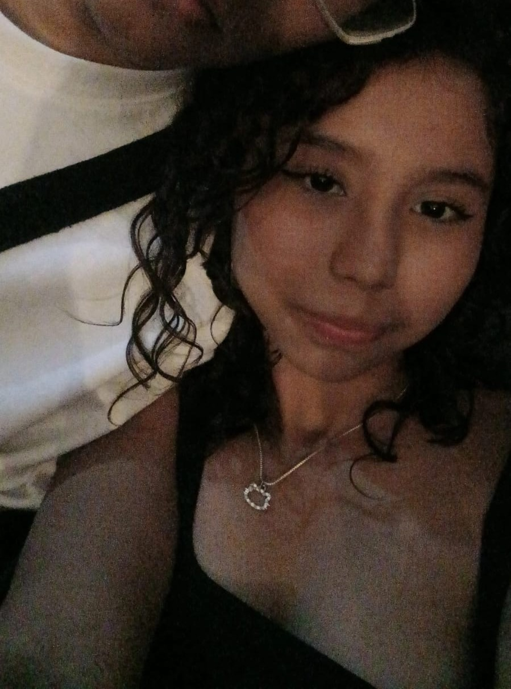
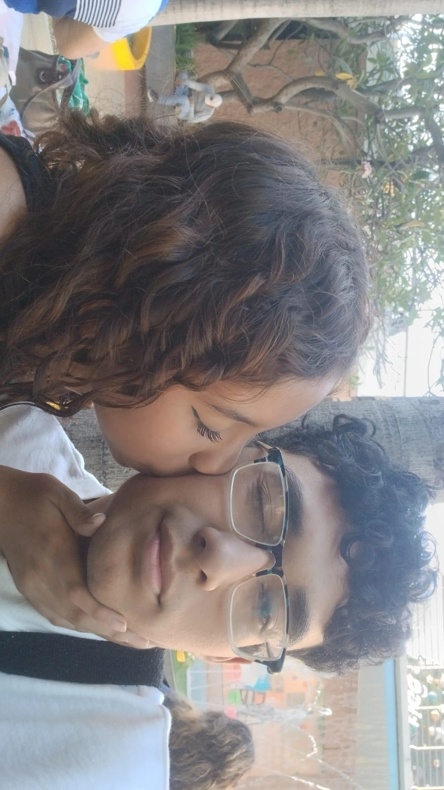
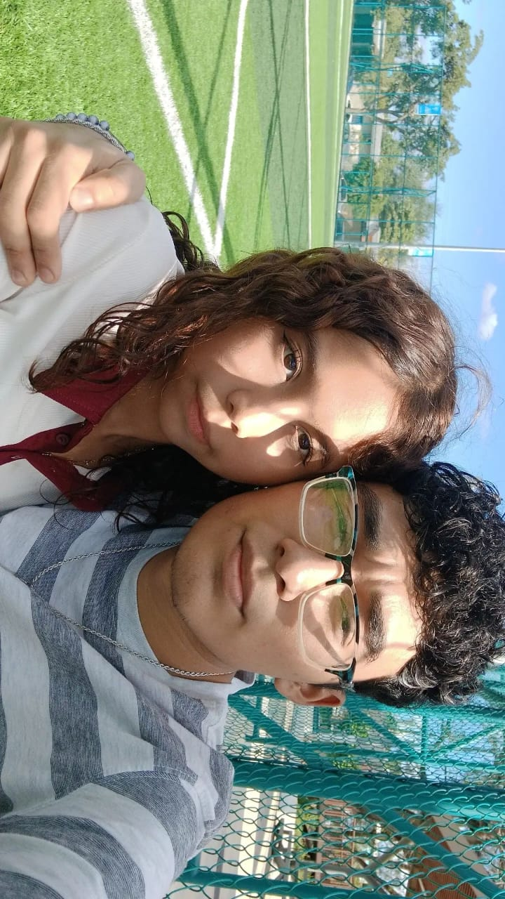
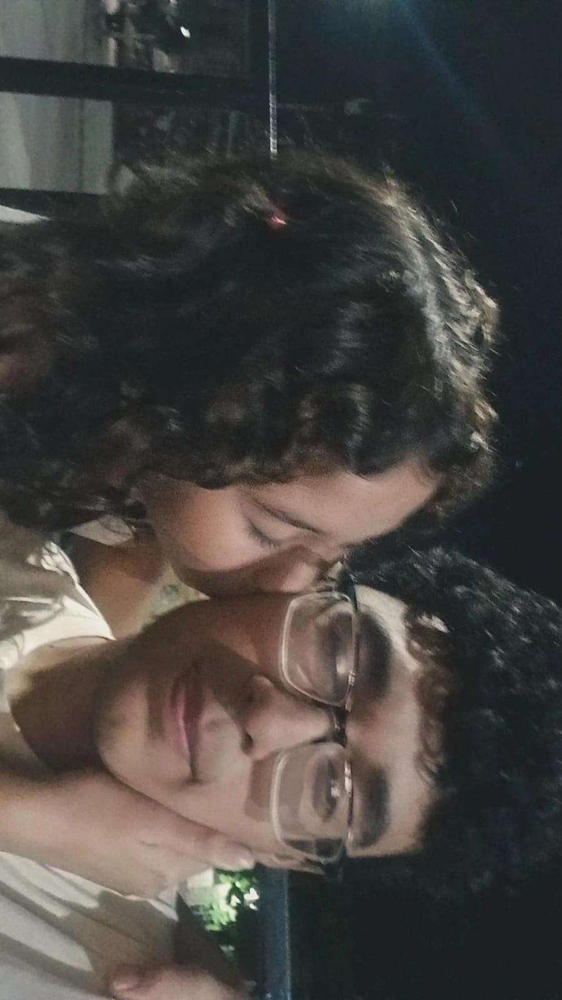
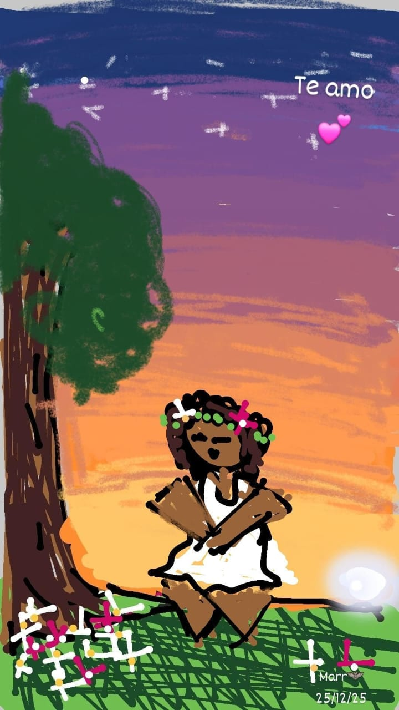
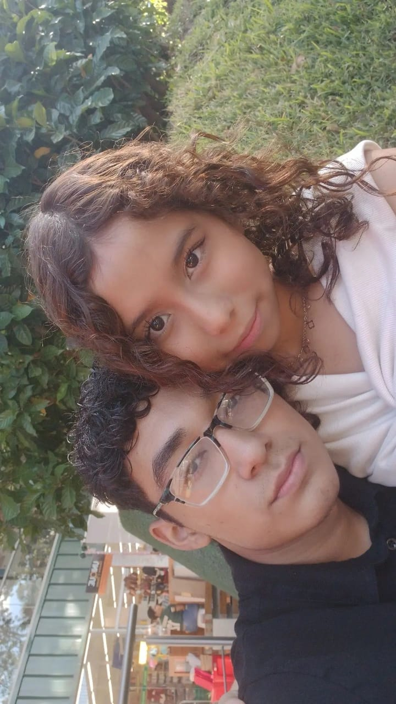
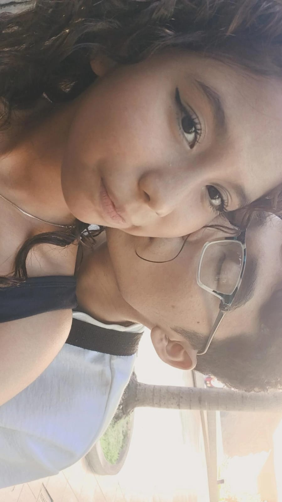
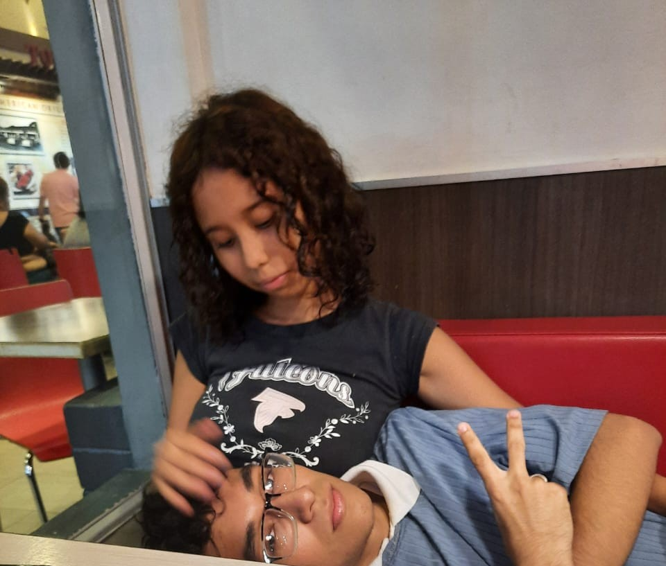
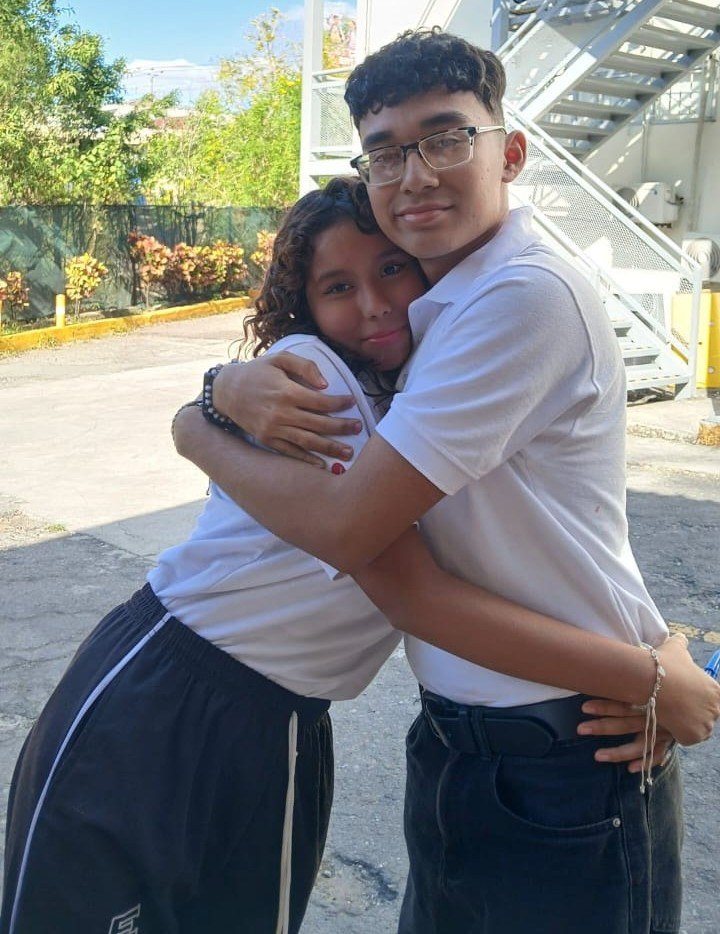
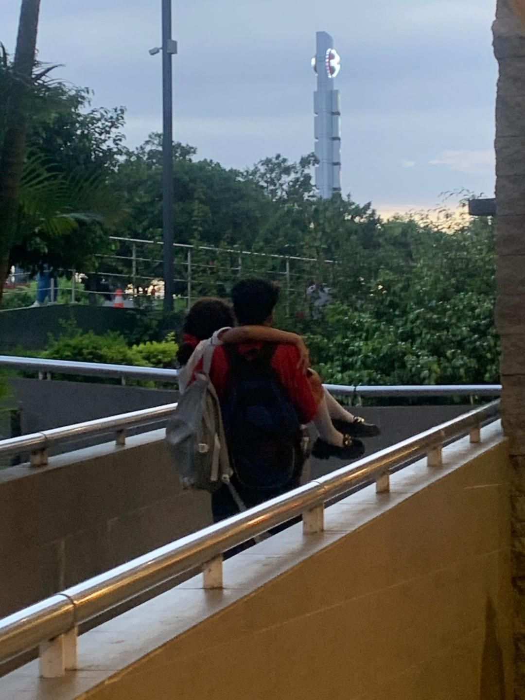

Extraño platicar contigo, extraño tus chistes de Apopa, que me cuentes de cosas insignificantes, que me sonrías y hagas vocecitas pequeñas; extraño la manera en que mi cabeza replicaba tu voz dentro de mí para leer lo que me decías; me hacen falta tus ojos, tus cabellos y rulos, tu piel suave canela, como el cobre, el cobre que condujo electricidad dentro de mí; tu olor dulce que a veces aún percibo y volteo con miedo e incredulidad pensando que eres tú.
Odio verte de lejos, odio verte sentada al otro lado porque realmente quisiera que estuvieras sentada conmigo, que me piques las costillas y me hagas dibujos en los cuadernos, y no verte, no verte ahí en silencio, silencio que alguna vez habitamos como las hiedras entre las rosas.
Quisiera volver a verte por un microinstante, cerrar los ojos antes de un beso, jugar con tu pelo y que me veas a los ojos con la ternura que alguna vez me tuviste... Extraño todo eso, cada parte de eso, cada parte de ti, de tu carne, de tu pecho y de tu corazón.
Coordinar una salida o un bus solamente para vernos un rato más... acompañarte a tu casa o irme hasta tarde sin importar los regaños que realmente ya no eran castigos si estabas conmigo... vivir en tus faenas, reírme y escaparme contigo, con tal de verte una hora más o quizás menos.
Pero he sido cruel, he sido malo, he dañado y dejé de ser aquel que alguna vez creíste que fui; a medida que pasó el tiempo nos fuimos mutuamente quebrando y pido perdón por no quedarme en esos instantes a tu lado, por no acompañarte cuando más me necesitabas y ser estúpido cuando no estaba.
Después de todo, tú me conoces tanto como yo mismo, ¿para qué alejarte si eres el polo opuesto de mi mundo?
Te amo y te amo Katherine Valeria De León Serpas.
Atentamente: Aaron Marcelo Escobar Azucena




